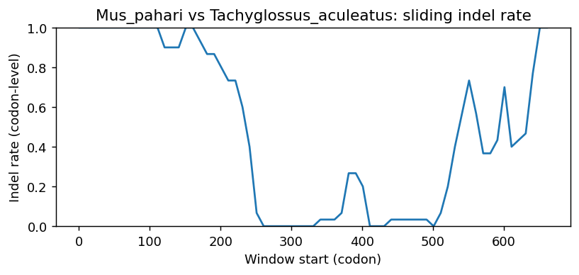

Ortholog Divergence Report
Input: SSTR4.valid.longest.fa · N sequences: 269 · Aligned length: 666 codons
Reference: Mus_pahari
Quick risk overview
- LOW: 0
- INTERMEDIATE: 0
- HIGH: 36046


Composition & complexity per sequence
Saved as per_sequence_composition.csv. High low-complexity or repeat content can reduce BLAST sensitivity due to soft masking.
| id | GC | GC skew | CpG dens. | AA LCR frac | NT repeat frac | AA len | CDS len |
|---|---|---|---|---|---|---|---|
| Mus_pahari | 0.59931 | -0.04035 | 0.05272 | 0.0 | 0.7582 | 386 | 1158 |
| Chlorocebus_sabaeus | 0.65636 | -0.05759 | 0.07825 | 0.14948 | 0.76203 | 388 | 1164 |
| Macaca_fascicularis | 0.65292 | -0.06579 | 0.07481 | 0.1134 | 0.7732 | 388 | 1164 |
| Gavialis_gangeticus | 0.58824 | 0.0 | 0.0278 | 0.04167 | 0.77533 | 408 | 1224 |
| Amblyraja_radiata | 0.60207 | -0.06724 | 0.07241 | 0.04651 | 0.82773 | 387 | 1161 |
| Mustela_putorius_furo | 0.64985 | 0.01462 | 0.07608 | 0.18421 | 0.70833 | 456 | 1368 |
| Camarhynchus_parvulus | 0.71964 | -0.0419 | 0.11175 | 0.07579 | 0.75632 | 409 | 1227 |
| Sorex_fumeus | 0.67801 | -0.03732 | 0.09083 | 0.03141 | 0.75218 | 382 | 1146 |
| Lagopus_muta | 0.65152 | -0.06202 | 0.06908 | 0.08081 | 0.76936 | 396 | 1188 |
| Lynx_rufus | 0.63997 | -0.06864 | 0.06552 | 0.08527 | 0.78898 | 387 | 1161 |
| Pezoporus_occidentalis | 0.67586 | -0.08617 | 0.07592 | 0.07356 | 0.73027 | 435 | 1305 |
| Diceros_bicornis_minor | 0.65633 | -0.06562 | 0.08448 | 0.07494 | 0.81051 | 387 | 1161 |
| Mandrillus_leucophaeus | 0.6388 | -0.11409 | 0.06867 | 0.04823 | 0.80707 | 311 | 933 |
| Hylobates_moloch | 0.65979 | -0.0651 | 0.07481 | 0.10567 | 0.77405 | 388 | 1164 |
| Mauremys_reevesii | 0.64568 | -0.025 | 0.063 | 0.10412 | 0.74092 | 413 | 1239 |
| Columba_livia | 0.66425 | -0.05939 | 0.06688 | 0.11353 | 0.72383 | 414 | 1242 |
| Nannospalax_galili | 0.62532 | -0.04959 | 0.06034 | 0.03101 | 0.77606 | 387 | 1161 |
| Peromyscus_maniculatus_bairdii | 0.60243 | -0.05476 | 0.053 | 0.0 | 0.79514 | 384 | 1152 |
| Castor_canadensis | 0.60551 | -0.07824 | 0.05517 | 0.0 | 0.75711 | 387 | 1161 |
| Lepidothrix_coronata | 0.70052 | -0.0632 | 0.09209 | 0.11458 | 0.73524 | 384 | 1152 |
| Jaculus_jaculus | 0.63427 | -0.04301 | 0.06997 | 0.04604 | 0.78005 | 391 | 1173 |
| Dromaius_novaehollandiae | 0.58881 | -0.01653 | 0.03166 | 0.07299 | 0.72425 | 411 | 1233 |
| Trichosurus_vulpecula | 0.55612 | -0.0258 | 0.02365 | 0.05316 | 0.74008 | 395 | 1185 |
| Vidua_chalybeata | 0.66505 | -0.03155 | 0.06785 | 0.10169 | 0.76594 | 413 | 1239 |
| Lonchura_striata | 0.69169 | -0.04784 | 0.09047 | 0.12833 | 0.74415 | 413 | 1239 |
| Melanerpes_formicivorus | 0.66879 | -0.06893 | 0.06175 | 0.1234 | 0.7305 | 470 | 1410 |
| Pan_troglodytes | 0.65808 | -0.06527 | 0.07653 | 0.09536 | 0.78007 | 388 | 1164 |
| Lathamus_discolor | 0.68039 | -0.06287 | 0.08239 | 0.07748 | 0.73204 | 413 | 1239 |
| Anas_acuta | 0.66583 | -0.06399 | 0.06773 | 0.08772 | 0.74436 | 399 | 1197 |
| Urocitellus_parryii | 0.60637 | -0.02557 | 0.0569 | 0.0 | 0.80362 | 387 | 1161 |
| Pseudopipra_pipra | 0.70541 | -0.06407 | 0.09451 | 0.13559 | 0.73123 | 413 | 1239 |
| Nothoprocta_perdicaria | 0.62233 | -0.02902 | 0.04848 | 0.07635 | 0.78325 | 406 | 1218 |
| Harpia_harpyja | 0.66909 | -0.05911 | 0.06866 | 0.1138 | 0.70621 | 413 | 1239 |
| Malaclemys_terrapin_pileata | 0.64891 | -0.02736 | 0.06462 | 0.10169 | 0.71348 | 413 | 1239 |
| Passer_domesticus | 0.72559 | -0.03003 | 0.1147 | 0.12833 | 0.72881 | 413 | 1239 |
| Aphelocoma_coerulescens | 0.71276 | 0.0 | 0.11203 | 0.19506 | 0.74239 | 405 | 1215 |
| Ochotona_princeps | 0.63425 | -0.04325 | 0.07072 | 0.08229 | 0.81131 | 401 | 1203 |
| Pongo_abelii | 0.65979 | -0.07812 | 0.07653 | 0.06701 | 0.77234 | 388 | 1164 |
| Macaca_nemestrina | 0.65206 | -0.06719 | 0.07395 | 0.1134 | 0.78265 | 388 | 1164 |
| Mustela_nigripes | 0.62543 | -0.02747 | 0.06621 | 0.09278 | 0.73625 | 388 | 1164 |
| Falco_peregrinus | 0.64891 | -0.06219 | 0.05331 | 0.07748 | 0.69088 | 413 | 1239 |
| Marmota_monax | 0.60896 | -0.04668 | 0.05948 | 0.0 | 0.79845 | 387 | 1161 |
| Cinclus_cinclus | 0.70253 | -0.03712 | 0.10196 | 0.10758 | 0.75061 | 409 | 1227 |
| Mesocricetus_auratus | 0.58681 | -0.06213 | 0.05126 | 0.03125 | 0.78038 | 384 | 1152 |
| Nipponia_nippon | 0.68523 | -0.06007 | 0.08078 | 0.17191 | 0.70056 | 413 | 1239 |
| Pezoporus_wallicus | 0.67433 | -0.07955 | 0.07362 | 0.07356 | 0.73716 | 435 | 1305 |
| Haemorhous_mexicanus | 0.71926 | -0.03712 | 0.11336 | 0.11165 | 0.76133 | 412 | 1236 |
| Lontra_canadensis | 0.63058 | -0.0218 | 0.06535 | 0.09021 | 0.74055 | 388 | 1164 |
| Puma_concolor | 0.61647 | -0.08142 | 0.05284 | 0.04633 | 0.8121 | 259 | 777 |
| Sturnus_vulgaris | 0.73031 | -0.01525 | 0.12102 | 0.15513 | 0.75338 | 419 | 1257 |
| Suricata_suricatta | 0.60929 | -0.05531 | 0.05287 | 0.06831 | 0.76412 | 366 | 1098 |
| Antechinus_flavipes | 0.55359 | -0.03049 | 0.02449 | 0.04051 | 0.74008 | 395 | 1185 |
| Phaenicophaeus_curvirostris | 0.63026 | -0.0552 | 0.04534 | 0.13835 | 0.71359 | 412 | 1236 |
| Aotus_nancymaae | 0.65378 | -0.06702 | 0.07653 | 0.1366 | 0.78866 | 388 | 1164 |
| Eulemur_rufifrons | 0.64513 | -0.06809 | 0.07241 | 0.03359 | 0.80276 | 387 | 1161 |
| Acinonyx_jubatus | 0.63299 | -0.06412 | 0.06223 | 0.11658 | 0.78497 | 386 | 1158 |
| Corvus_kubaryi | 0.7019 | -0.02703 | 0.10576 | 0.18902 | 0.73984 | 492 | 1476 |
| Peromyscus_californicus_insignis | 0.60417 | -0.03736 | 0.05474 | 0.0 | 0.77691 | 384 | 1152 |
| Taeniopygia_guttata | 0.69417 | -0.03963 | 0.0915 | 0.1165 | 0.73786 | 412 | 1236 |
| Carlito_syrichta | 0.66781 | -0.06667 | 0.08114 | 0.09589 | 0.7911 | 292 | 876 |
| Alexandromys_fortis | 0.59288 | -0.03953 | 0.05647 | 0.03125 | 0.77691 | 384 | 1152 |
| Tinamus_guttatus | 0.65054 | -0.04683 | 0.06816 | 0.08065 | 0.75358 | 372 | 1116 |
| Dromiciops_gliroides | 0.5654 | -0.02687 | 0.01858 | 0.05316 | 0.71646 | 395 | 1185 |
| Marmota_flaviventris | 0.60982 | -0.04802 | 0.05862 | 0.0 | 0.79845 | 387 | 1161 |
| Mirounga_angustirostris | 0.64175 | -0.06827 | 0.06879 | 0.0799 | 0.76718 | 388 | 1164 |
| Oenanthe_melanoleuca | 0.71899 | -0.03991 | 0.1098 | 0.2 | 0.74346 | 395 | 1185 |
| Charadrius_vociferus | 0.65375 | -0.05185 | 0.05816 | 0.1138 | 0.71671 | 413 | 1239 |
| Caretta_caretta | 0.6481 | -0.03113 | 0.06139 | 0.08232 | 0.72801 | 413 | 1239 |
| Corvus_moneduloides | 0.7019 | -0.0251 | 0.10576 | 0.18089 | 0.74255 | 492 | 1476 |
| Xenopus_tropicalis | 0.47044 | -0.03825 | 0.01372 | 0.03085 | 0.75578 | 389 | 1167 |
| Ursus_americanus | 0.63824 | -0.05803 | 0.06724 | 0.06977 | 0.74591 | 387 | 1161 |
| Neopelma_chrysocephalum | 0.70833 | -0.05882 | 0.09463 | 0.18029 | 0.72356 | 416 | 1248 |
| Corapipo_altera | 0.70621 | -0.06286 | 0.09451 | 0.13559 | 0.72801 | 413 | 1239 |
| Anomalospiza_imberbis | 0.68289 | -0.03563 | 0.08523 | 0.09489 | 0.76967 | 411 | 1233 |
| Manacus_candei | 0.69976 | -0.06344 | 0.09047 | 0.13559 | 0.71429 | 413 | 1239 |
| Phoca_vitulina | 0.64605 | -0.06383 | 0.06535 | 0.08247 | 0.75859 | 388 | 1164 |
| Falco_naumanni | 0.67223 | -0.069 | 0.06559 | 0.13915 | 0.66234 | 539 | 1617 |
| Anas_platyrhynchos | 0.66416 | -0.06667 | 0.06689 | 0.08772 | 0.7477 | 399 | 1197 |
| Alligator_sinensis | 0.58905 | 0.00416 | 0.02944 | 0.04167 | 0.76797 | 408 | 1224 |
| Meleagris_gallopavo | 0.65404 | -0.06306 | 0.07161 | 0.07576 | 0.75 | 396 | 1188 |
| Leptosomus_discolor | 0.636 | -0.04061 | 0.04766 | 0.07748 | 0.71348 | 413 | 1239 |
| Phalacrocorax_carbo | 0.67151 | -0.07692 | 0.07108 | 0.07748 | 0.67312 | 413 | 1239 |
| Saimiri_boliviensis | 0.65808 | -0.07572 | 0.07825 | 0.13918 | 0.80498 | 388 | 1164 |
| Dryobates_pubescens | 0.69002 | -0.08051 | 0.083 | 0.10145 | 0.7182 | 414 | 1242 |
| Homo_sapiens | 0.65979 | -0.06771 | 0.07911 | 0.13402 | 0.77148 | 388 | 1164 |
| Leopardus_geoffroyi | 0.6391 | -0.07008 | 0.06466 | 0.09302 | 0.78122 | 387 | 1161 |
| Phodopus_roborovskii | 0.58594 | -0.04593 | 0.04778 | 0.03125 | 0.79514 | 384 | 1152 |
| Patagioenas_fasciata | 0.68599 | -0.05164 | 0.08139 | 0.1256 | 0.72464 | 414 | 1242 |
| Macaca_thibetana_thibetana | 0.65206 | -0.06983 | 0.07395 | 0.1134 | 0.77663 | 388 | 1164 |
| Prionailurus_viverrinus | 0.6348 | -0.0692 | 0.06207 | 0.11628 | 0.78984 | 387 | 1161 |
| Petaurus_breviceps_papuanus | 0.55696 | -0.01212 | 0.02027 | 0.05316 | 0.72405 | 395 | 1185 |
| Ceratotherium_simum_simum | 0.63645 | -0.08423 | 0.07512 | 0.0 | 0.81774 | 342 | 1026 |
| Trachypithecus_francoisi | 0.64508 | -0.06292 | 0.06914 | 0.13472 | 0.77807 | 386 | 1158 |
| Crocodylus_porosus | 0.58578 | -0.00139 | 0.02944 | 0.04167 | 0.77451 | 408 | 1224 |
| Ursus_maritimus | 0.6391 | -0.0593 | 0.0681 | 0.06977 | 0.74935 | 387 | 1161 |
| Propithecus_coquereli | 0.64863 | -0.04371 | 0.07395 | 0.04381 | 0.81529 | 388 | 1164 |
| Anser_cygnoides | 0.65998 | -0.0481 | 0.0602 | 0.07769 | 0.75856 | 399 | 1197 |
| Rhinopithecus_bieti | 0.64767 | -0.06933 | 0.07347 | 0.1114 | 0.7772 | 386 | 1158 |
| Melopsittacus_undulatus | 0.65214 | -0.02228 | 0.05816 | 0.07748 | 0.73527 | 413 | 1239 |
| Arvicanthis_niloticus | 0.59134 | -0.03367 | 0.05633 | 0.0 | 0.78961 | 385 | 1155 |
| Haliaeetus_leucocephalus | 0.67716 | -0.05125 | 0.07593 | 0.1138 | 0.69411 | 413 | 1239 |
| Cercocebus_atys | 0.65378 | -0.06439 | 0.07567 | 0.14948 | 0.77491 | 388 | 1164 |
| Apus_apus | 0.64159 | -0.06683 | 0.04696 | 0.07524 | 0.69256 | 412 | 1236 |
| Falco_biarmicus | 0.64972 | -0.05839 | 0.05493 | 0.07748 | 0.67797 | 413 | 1239 |
| Erinaceus_europaeus | 0.60256 | -0.04397 | 0.04448 | 0.03077 | 0.73077 | 390 | 1170 |
| Accipiter_gentilis | 0.68039 | -0.05813 | 0.07754 | 0.1138 | 0.69572 | 413 | 1239 |
| Lepus_europaeus | 0.6882 | -0.07885 | 0.10086 | 0.03101 | 0.79845 | 387 | 1161 |
| Tyto_alba | 0.66503 | -0.07371 | 0.06623 | 0.07598 | 0.69199 | 408 | 1224 |
| Panthera_pardus | 0.64083 | -0.07258 | 0.0681 | 0.12145 | 0.78467 | 387 | 1161 |
| Papio_anubis | 0.65206 | -0.06456 | 0.07739 | 0.1134 | 0.78007 | 388 | 1164 |
| Mus_caroli | 0.59827 | -0.03618 | 0.05373 | 0.0 | 0.78788 | 385 | 1155 |
| Pelodiscus_sinensis | 0.67072 | -0.05441 | 0.07386 | 0.07543 | 0.74615 | 411 | 1233 |
| Rhinopithecus_roxellana | 0.64767 | -0.06933 | 0.07347 | 0.1114 | 0.7772 | 386 | 1158 |
| Molothrus_ater | 0.71545 | -0.03409 | 0.10903 | 0.06585 | 0.7748 | 410 | 1230 |
| Dipodomys_merriami | 0.60223 | -0.05563 | 0.05761 | 0.03093 | 0.75687 | 388 | 1164 |
| Rattus_norvegicus | 0.58073 | -0.03139 | 0.04431 | 0.03125 | 0.78038 | 384 | 1152 |
| Pleurodeles_waltl | 0.62376 | -0.11111 | 0.07845 | 0.10396 | 0.80446 | 404 | 1212 |
| Aquila_chrysaetos_chrysaetos | 0.68042 | -0.05589 | 0.07935 | 0.11165 | 0.69337 | 412 | 1236 |
| Chroicocephalus_ridibundus | 0.65375 | -0.04938 | 0.05816 | 0.11622 | 0.70056 | 413 | 1239 |
| Lutra_lutra | 0.63058 | -0.02452 | 0.06363 | 0.09278 | 0.73024 | 388 | 1164 |
| Ochotona_curzoniae | 0.64096 | -0.04787 | 0.06888 | 0.09701 | 0.81343 | 402 | 1206 |
| Vombatus_ursinus | 0.55612 | -0.0349 | 0.02027 | 0.05316 | 0.72321 | 395 | 1185 |
| Condylura_cristata | 0.62791 | -0.02606 | 0.06638 | 0.0 | 0.80276 | 387 | 1161 |
| Otolemur_garnettii | 0.6381 | -0.07734 | 0.05893 | 0.07273 | 0.74805 | 385 | 1155 |
| Panthera_tigris | 0.63997 | -0.07402 | 0.0681 | 0.12145 | 0.78295 | 387 | 1161 |
| Talpa_occidentalis | 0.6236 | -0.0221 | 0.06034 | 0.03876 | 0.76055 | 387 | 1161 |
| Chrysemys_picta_bellii | 0.64568 | -0.025 | 0.06381 | 0.10169 | 0.71348 | 413 | 1239 |
| Colius_striatus | 0.69719 | -0.07373 | 0.09164 | 0.13253 | 0.68514 | 415 | 1245 |
| Gavia_stellata | 0.67799 | -0.06921 | 0.08016 | 0.13835 | 0.70631 | 412 | 1236 |
| Pan_paniscus | 0.66323 | -0.06995 | 0.07997 | 0.09536 | 0.77577 | 388 | 1164 |
| Ictidomys_tridecemlineatus | 0.60724 | -0.02979 | 0.05862 | 0.0 | 0.80792 | 387 | 1161 |
| Chaetura_pelagica | 0.65243 | -0.05777 | 0.057 | 0.11558 | 0.70603 | 398 | 1194 |
| Leptonychotes_weddellii | 0.6306 | -0.09119 | 0.06634 | 0.03801 | 0.76023 | 342 | 1026 |
| Enhydra_lutris_kenyoni | 0.6323 | -0.03261 | 0.06707 | 0.08763 | 0.73024 | 388 | 1164 |
| Prinia_subflava | 0.67319 | -0.03148 | 0.07504 | 0.09046 | 0.76528 | 409 | 1227 |
| Onychomys_torridus | 0.60346 | -0.03874 | 0.05633 | 0.03117 | 0.77749 | 385 | 1155 |
| Chiroxiphia_lanceolata | 0.70541 | -0.06178 | 0.0937 | 0.13559 | 0.72801 | 413 | 1239 |
| Colobus_angolensis_palliatus | 0.64335 | -0.05503 | 0.07347 | 0.13472 | 0.77202 | 386 | 1158 |
| Numida_meleagris | 0.67508 | -0.07232 | 0.08256 | 0.11111 | 0.74242 | 396 | 1188 |
| Chamaea_fasciata | 0.67808 | -0.04087 | 0.08075 | 0.06112 | 0.76365 | 409 | 1227 |
| Ursus_arctos | 0.6391 | -0.06199 | 0.06897 | 0.06977 | 0.74332 | 387 | 1161 |
| Gorilla_gorilla_gorilla | 0.66065 | -0.06892 | 0.07997 | 0.11082 | 0.75515 | 388 | 1164 |
| Mauremys_mutica | 0.65052 | -0.02978 | 0.06624 | 0.10169 | 0.74092 | 413 | 1239 |
| Emys_orbicularis | 0.64649 | -0.02122 | 0.0622 | 0.10169 | 0.72236 | 413 | 1239 |
| Pezoporus_flaviventris | 0.67586 | -0.0839 | 0.07439 | 0.07356 | 0.74483 | 435 | 1305 |
| Pipra_filicauda | 0.70379 | -0.05963 | 0.09208 | 0.13559 | 0.72801 | 413 | 1239 |
| Dasypus_novemcinctus | 0.6701 | -0.08462 | 0.0877 | 0.0567 | 0.78694 | 388 | 1164 |
| Geotrypetes_seraphini | 0.68533 | -0.04703 | 0.12139 | 0.06616 | 0.81425 | 393 | 1179 |
| Ailuropoda_melanoleuca | 0.64249 | -0.05376 | 0.06828 | 0.10881 | 0.7677 | 386 | 1158 |
| Melospiza_melodia_melodia | 0.72072 | -0.04318 | 0.11557 | 0.06388 | 0.76167 | 407 | 1221 |
| Haliaeetus_albicilla | 0.67797 | -0.05238 | 0.07674 | 0.1138 | 0.69411 | 413 | 1239 |
| Rhea_pennata | 0.56553 | -0.01001 | 0.02429 | 0.07524 | 0.78722 | 412 | 1236 |
| Mirounga_leonina | 0.64261 | -0.06684 | 0.06965 | 0.0799 | 0.76031 | 388 | 1164 |
| Cuculus_canorus | 0.61684 | -0.0603 | 0.0316 | 0.10316 | 0.72281 | 475 | 1425 |
| Prionailurus_bengalensis | 0.63824 | -0.07422 | 0.06466 | 0.09302 | 0.79156 | 387 | 1161 |
| Corvus_hawaiiensis | 0.70325 | -0.02312 | 0.10712 | 0.18902 | 0.74119 | 492 | 1476 |
| Cyrtonyx_montezumae | 0.65909 | -0.05492 | 0.07245 | 0.11111 | 0.75926 | 396 | 1188 |
| Apteryx_mantelli | 0.64401 | -0.03015 | 0.07206 | 0.07767 | 0.73625 | 412 | 1236 |
| Hyaena_hyaena | 0.63049 | -0.05738 | 0.05948 | 0.09819 | 0.75022 | 387 | 1161 |
| Neopsephotus_bourkii | 0.6707 | -0.06378 | 0.07351 | 0.07748 | 0.75464 | 413 | 1239 |
| Chionomys_nivalis | 0.59288 | -0.03953 | 0.05647 | 0.03125 | 0.77865 | 384 | 1152 |
| Terrapene_triunguis | 0.6481 | -0.0137 | 0.06381 | 0.10169 | 0.73123 | 413 | 1239 |
| Panthera_onca | 0.63738 | -0.07027 | 0.06552 | 0.12145 | 0.78122 | 387 | 1161 |
| Chelonoidis_abingdonii | 0.61719 | -0.0276 | 0.04464 | 0.09976 | 0.77534 | 411 | 1233 |
| Struthio_camelus | 0.61882 | -0.03539 | 0.05519 | 0.07543 | 0.75588 | 411 | 1233 |
| Coturnix_japonica | 0.63359 | -0.04953 | 0.05263 | 0.10941 | 0.73791 | 393 | 1179 |
| Alligator_mississippiensis | 0.58905 | 0.00139 | 0.03107 | 0.04167 | 0.76797 | 408 | 1224 |
| Ambystoma_mexicanum | 0.64083 | -0.12354 | 0.0809 | 0.095 | 0.80333 | 400 | 1200 |
| Cricetulus_griseus | 0.59288 | -0.06003 | 0.05647 | 0.03125 | 0.7934 | 384 | 1152 |
| Caloenas_nicobarica | 0.68277 | -0.05189 | 0.07655 | 0.11594 | 0.69887 | 414 | 1242 |
| Rattus_rattus | 0.58639 | -0.04167 | 0.04891 | 0.03141 | 0.77749 | 382 | 1146 |
| Neofelis_nebulosa | 0.63738 | -0.06216 | 0.06638 | 0.12145 | 0.77606 | 387 | 1161 |
| Pogoniulus_pusillus | 0.64972 | -0.05839 | 0.05977 | 0.10169 | 0.75626 | 413 | 1239 |
| Empidonax_traillii | 0.69976 | -0.05652 | 0.09047 | 0.16223 | 0.71832 | 413 | 1239 |
| Bombina_bombina | 0.41645 | -0.01646 | 0.00772 | 0.03085 | 0.76435 | 389 | 1167 |
| Lemur_catta | 0.65805 | -0.07068 | 0.08017 | 0.03618 | 0.81912 | 387 | 1161 |
| Melozone_crissalis | 0.71826 | -0.03535 | 0.11393 | 0.06634 | 0.75839 | 407 | 1221 |
| Trachemys_scripta_elegans | 0.64245 | -0.0201 | 0.06139 | 0.10169 | 0.72559 | 413 | 1239 |
| Poecile_atricapillus | 0.73071 | -0.0427 | 0.12243 | 0.15764 | 0.77915 | 406 | 1218 |
| Gallus_gallus | 0.65404 | -0.06821 | 0.0674 | 0.08081 | 0.7399 | 396 | 1188 |
| Aptenodytes_forsteri | 0.68119 | -0.06398 | 0.07916 | 0.07748 | 0.69572 | 413 | 1239 |
| Mus_musculus | 0.6 | -0.03608 | 0.05373 | 0.0 | 0.78268 | 385 | 1155 |
| Mustela_lutreola | 0.64839 | 0.01466 | 0.07462 | 0.19079 | 0.69956 | 456 | 1368 |
| Cebus_imitator | 0.65979 | -0.07031 | 0.07739 | 0.14948 | 0.80241 | 388 | 1164 |
| Passer_montanus | 0.7272 | -0.02553 | 0.11632 | 0.12833 | 0.73366 | 413 | 1239 |
| Cygnus_atratus | 0.66249 | -0.04666 | 0.06187 | 0.07769 | 0.74687 | 399 | 1197 |
| Meriones_unguiculatus | 0.60938 | -0.05128 | 0.05908 | 0.0 | 0.77778 | 384 | 1152 |
| Onychostruthus_taczanowskii | 0.72074 | -0.03919 | 0.11147 | 0.10654 | 0.74011 | 413 | 1239 |
| Apodemus_sylvaticus | 0.59758 | -0.03757 | 0.05532 | 0.0 | 0.7867 | 386 | 1158 |
| Gopherus_flavomarginatus | 0.62228 | -0.02724 | 0.04927 | 0.10169 | 0.74253 | 413 | 1239 |
| Vidua_macroura | 0.66263 | -0.04263 | 0.06785 | 0.0678 | 0.78047 | 413 | 1239 |
| Parus_major | 0.70934 | -0.042 | 0.11281 | 0.10628 | 0.74477 | 414 | 1242 |
| Mesitornis_unicolor | 0.62308 | -0.05181 | 0.03877 | 0.09927 | 0.69088 | 413 | 1239 |
| Zonotrichia_leucophrys_gambelii | 0.72236 | -0.03628 | 0.11639 | 0.06388 | 0.75676 | 407 | 1221 |
| Agelaius_phoeniceus | 0.7187 | -0.02941 | 0.11229 | 0.06585 | 0.76504 | 410 | 1230 |
| Motacilla_alba_alba | 0.72411 | -0.03464 | 0.1166 | 0.12136 | 0.7678 | 412 | 1236 |
| Rhinatrema_bivittatum | 0.67786 | -0.10801 | 0.10517 | 0.10078 | 0.7795 | 387 | 1161 |
| Nomascus_leucogenys | 0.66065 | -0.07672 | 0.07739 | 0.07474 | 0.79296 | 388 | 1164 |
| Gopherus_evgoodei | 0.62228 | -0.01946 | 0.04766 | 0.10169 | 0.73769 | 413 | 1239 |
| Lynx_canadensis | 0.63566 | -0.07046 | 0.06379 | 0.11628 | 0.79156 | 387 | 1161 |
| Catharus_ustulatus | 0.72263 | -0.02961 | 0.11038 | 0.1284 | 0.75473 | 405 | 1215 |
| Panthera_uncia | 0.64083 | -0.07258 | 0.0681 | 0.12145 | 0.78639 | 387 | 1161 |
| Marmota_marmota_marmota | 0.61068 | -0.04937 | 0.05948 | 0.0 | 0.79845 | 387 | 1161 |
| Hirundo_rustica | 0.71883 | -0.04989 | 0.11501 | 0.11002 | 0.75061 | 409 | 1227 |
| Indicator_indicator | 0.66264 | -0.07412 | 0.06285 | 0.1087 | 0.72947 | 414 | 1242 |
| Acomys_russatus | 0.59809 | -0.03628 | 0.05126 | 0.0 | 0.77951 | 384 | 1152 |
| Calidris_pugnax | 0.65698 | -0.07125 | 0.05654 | 0.1138 | 0.71429 | 413 | 1239 |
| Grus_americana | 0.68599 | -0.05399 | 0.0838 | 0.11111 | 0.69807 | 414 | 1242 |
| Pyrgilauda_ruficollis | 0.72236 | -0.03687 | 0.11389 | 0.10896 | 0.74496 | 413 | 1239 |
| Myodes_glareolus | 0.59028 | -0.04412 | 0.05734 | 0.03125 | 0.78733 | 384 | 1152 |
| Grammomys_surdaster | 0.59134 | -0.0366 | 0.05199 | 0.0 | 0.77662 | 385 | 1155 |
| Sapajus_apella | 0.66237 | -0.06615 | 0.07739 | 0.14948 | 0.78866 | 388 | 1164 |
| Lagopus_leucura | 0.6532 | -0.07216 | 0.06992 | 0.08081 | 0.76431 | 396 | 1188 |
| Dipodomys_ordii | 0.60052 | -0.05866 | 0.05503 | 0.06701 | 0.7543 | 388 | 1164 |
| Gracilinanus_agilis | 0.54738 | -0.01391 | 0.01693 | 0.03299 | 0.75804 | 394 | 1182 |
| Bufo_gargarizans | 0.48849 | -0.05061 | 0.01365 | 0.0665 | 0.76726 | 391 | 1173 |
| Ammospiza_nelsoni | 0.72154 | -0.042 | 0.11639 | 0.06388 | 0.76003 | 407 | 1221 |
| Molothrus_aeneus | 0.71707 | -0.03401 | 0.11066 | 0.06585 | 0.76992 | 410 | 1230 |
| Ammospiza_caudacuta | 0.72072 | -0.04091 | 0.11639 | 0.06388 | 0.75839 | 407 | 1221 |
| Myiozetetes_cayanensis | 0.69895 | -0.06236 | 0.09047 | 0.13559 | 0.73931 | 413 | 1239 |
| Pseudopodoces_humilis | 0.73004 | -0.04171 | 0.12273 | 0.15309 | 0.77613 | 405 | 1215 |
| Oryctolagus_cuniculus | 0.68389 | -0.08816 | 0.09655 | 0.03101 | 0.78381 | 387 | 1161 |
| Tachyglossus_aculeatus | 0.76444 | -0.07674 | 0.1121 | 0.35733 | 0.61689 | 375 | 1125 |
| Felis_catus | 0.6391 | -0.07008 | 0.06724 | 0.11628 | 0.77606 | 387 | 1161 |
| Falco_cherrug | 0.65214 | -0.05941 | 0.05735 | 0.07748 | 0.68119 | 413 | 1239 |
| Chelonia_mydas | 0.64245 | -0.02764 | 0.05654 | 0.10169 | 0.73608 | 413 | 1239 |
| Choloepus_didactylus | 0.66149 | -0.05744 | 0.08643 | 0.03109 | 0.81174 | 386 | 1158 |
| Symphalangus_syndactylus | 0.66065 | -0.07672 | 0.07567 | 0.10567 | 0.7878 | 388 | 1164 |
| Microtus_ochrogaster | 0.58767 | -0.03988 | 0.05474 | 0.03125 | 0.78646 | 384 | 1152 |
| Nyctibius_grandis | 0.68841 | -0.07602 | 0.08541 | 0.07971 | 0.69082 | 414 | 1242 |
| Ornithorhynchus_anatinus | 0.75887 | -0.09813 | 0.11358 | 0.25532 | 0.64894 | 376 | 1128 |
| Halichoerus_grypus | 0.64858 | -0.06242 | 0.06724 | 0.08269 | 0.74677 | 387 | 1161 |
| Sciurus_carolinensis | 0.60693 | -0.06134 | 0.05546 | 0.0 | 0.80693 | 385 | 1155 |
| Tympanuchus_pallidicinctus | 0.65572 | -0.07317 | 0.07161 | 0.08081 | 0.76347 | 396 | 1188 |
| Meles_meles | 0.63918 | -0.02688 | 0.06707 | 0.12629 | 0.74656 | 388 | 1164 |
| Theropithecus_gelada | 0.65464 | -0.06299 | 0.07825 | 0.1134 | 0.78179 | 388 | 1164 |
| Perognathus_longimembris_pacificus | 0.59622 | -0.05476 | 0.05073 | 0.08247 | 0.77491 | 388 | 1164 |
| Rissa_tridactyla | 0.64972 | -0.05839 | 0.05493 | 0.11138 | 0.70379 | 413 | 1239 |
| Aythya_fuligula | 0.65497 | -0.05612 | 0.05602 | 0.08772 | 0.74436 | 399 | 1197 |
| Callithrix_jacchus | 0.65979 | -0.07292 | 0.07911 | 0.15722 | 0.80498 | 388 | 1164 |
| Monodelphis_domestica | 0.54346 | 0.0 | 0.01351 | 0.04557 | 0.75612 | 395 | 1185 |
| Falco_rusticolus | 0.65214 | -0.05941 | 0.05735 | 0.07748 | 0.68119 | 413 | 1239 |
| Nycticebus_coucang | 0.66061 | -0.08519 | 0.07886 | 0.06494 | 0.75584 | 385 | 1155 |
| Mustela_erminea | 0.64912 | 0.00225 | 0.07462 | 0.14912 | 0.70029 | 456 | 1368 |
| Neogale_vison | 0.62887 | -0.03005 | 0.06707 | 0.09278 | 0.7311 | 388 | 1164 |
| Sarcophilus_harrisii | 0.55443 | -0.02892 | 0.02449 | 0.0481 | 0.73165 | 395 | 1185 |
| Athene_cunicularia | 0.63964 | -0.06274 | 0.04754 | 0.10565 | 0.67731 | 407 | 1221 |
| Gymnogyps_californianus | 0.67794 | -0.06176 | 0.08058 | 0.11594 | 0.69565 | 414 | 1242 |
| Suncus_etruscus | 0.62543 | -0.04945 | 0.06363 | 0.03608 | 0.73883 | 388 | 1164 |
| Emydura_macquarii_macquarii | 0.64065 | -0.04822 | 0.05289 | 0.12683 | 0.74065 | 410 | 1230 |
| Rana_temporaria | 0.54639 | -0.09434 | 0.03009 | 0.03093 | 0.77749 | 388 | 1164 |
| Eurypyga_helias | 0.64563 | -0.06015 | 0.06235 | 0.06796 | 0.71359 | 412 | 1236 |
| Microcebus_murinus | 0.66064 | -0.05346 | 0.07672 | 0.06718 | 0.795 | 387 | 1161 |
| Macaca_mulatta | 0.65206 | -0.06456 | 0.07567 | 0.1134 | 0.77491 | 388 | 1164 |
| Peromyscus_eremicus | 0.60243 | -0.05187 | 0.053 | 0.0 | 0.78993 | 384 | 1152 |
| Cygnus_olor | 0.66417 | -0.05144 | 0.06255 | 0.08 | 0.75 | 400 | 1200 |
| Panthera_leo | 0.63738 | -0.07027 | 0.06466 | 0.12145 | 0.78639 | 387 | 1161 |
| Centrocercus_urophasianus | 0.65741 | -0.0653 | 0.07329 | 0.08081 | 0.76515 | 396 | 1188 |
| Acanthisitta_chloris | 0.6224 | -0.06276 | 0.0417 | 0.07812 | 0.71528 | 384 | 1152 |
| Microtus_oregoni | 0.58941 | -0.03976 | 0.0556 | 0.03125 | 0.78385 | 384 | 1152 |
| Puma_yagouaroundi | 0.63738 | -0.06486 | 0.06293 | 0.11886 | 0.77606 | 387 | 1161 |
| Pongo_pygmaeus | 0.65636 | -0.08115 | 0.07481 | 0.06701 | 0.77405 | 388 | 1164 |
| Mastomys_coucha | 0.5974 | -0.03478 | 0.05286 | 0.0 | 0.77229 | 385 | 1155 |
| Psammomys_obesus | 0.60938 | -0.04274 | 0.06082 | 0.0 | 0.78385 | 384 | 1152 |
| Melospiza_georgiana | 0.72072 | -0.04091 | 0.11475 | 0.06388 | 0.76003 | 407 | 1221 |
| Strigops_habroptila | 0.65779 | -0.05276 | 0.06785 | 0.07506 | 0.7498 | 413 | 1239 |
| Arvicola_amphibius | 0.59115 | -0.05727 | 0.05821 | 0.03125 | 0.76476 | 384 | 1152 |
| Phasianus_colchicus | 0.65657 | -0.06154 | 0.06824 | 0.11111 | 0.75168 | 396 | 1188 |
| Dipodomys_spectabilis | 0.59794 | -0.0546 | 0.05331 | 0.03093 | 0.75086 | 388 | 1164 |
Pairwise metrics (top 80 shown)
Full table: pairwise_metrics.csv
| seqA | seqB | AA id | AA cov | Longest block | NT id | Ts | Tv | Ts/Tv | Syn | NonSyn | Ambig | Gap ev | Max gap cluster | Gap frac | <20% win | GC mean | |GC diff| | mean LCR | mean repeats | Risk |
|---|---|---|---|---|---|---|---|---|---|---|---|---|---|---|---|---|---|---|---|---|
| Bombina_bombina | Tachyglossus_aculeatus | 0.458 | 0.512 | 8 | 0.521 | 224 | 266 | 0.8421 | 98 | 36 | 157 | 18 | 146 | 0.488 | 0 | 0.590 | 0.348 | 0.194 | 0.691 | HIGH |
| Xenopus_tropicalis | Tachyglossus_aculeatus | 0.469 | 0.512 | 8 | 0.546 | 207 | 257 | 0.8054 | 90 | 47 | 144 | 18 | 146 | 0.488 | 0 | 0.617 | 0.294 | 0.194 | 0.686 | HIGH |
| Bombina_bombina | Ornithorhynchus_anatinus | 0.470 | 0.518 | 10 | 0.530 | 225 | 261 | 0.8621 | 100 | 40 | 152 | 18 | 146 | 0.482 | 0 | 0.588 | 0.342 | 0.143 | 0.707 | HIGH |
| Tachyglossus_aculeatus | Rana_temporaria | 0.473 | 0.510 | 8 | 0.600 | 164 | 244 | 0.6721 | 67 | 63 | 123 | 18 | 146 | 0.489 | 0 | 0.655 | 0.218 | 0.194 | 0.697 | HIGH |
| Bufo_gargarizans | Tachyglossus_aculeatus | 0.474 | 0.513 | 8 | 0.568 | 195 | 248 | 0.7863 | 72 | 51 | 142 | 18 | 146 | 0.486 | 0 | 0.626 | 0.276 | 0.212 | 0.692 | HIGH |
| Amblyraja_radiata | Tachyglossus_aculeatus | 0.475 | 0.518 | 8 | 0.618 | 136 | 259 | 0.5251 | 46 | 57 | 133 | 18 | 146 | 0.482 | 0 | 0.683 | 0.162 | 0.202 | 0.722 | HIGH |
| Amblyraja_radiata | Ornithorhynchus_anatinus | 0.478 | 0.524 | 10 | 0.629 | 133 | 255 | 0.5216 | 48 | 68 | 123 | 18 | 146 | 0.476 | 0 | 0.680 | 0.157 | 0.151 | 0.738 | HIGH |
| Ornithorhynchus_anatinus | Rana_temporaria | 0.480 | 0.516 | 10 | 0.610 | 161 | 242 | 0.6653 | 69 | 69 | 118 | 18 | 146 | 0.483 | 0 | 0.653 | 0.212 | 0.143 | 0.713 | HIGH |
| Xenopus_tropicalis | Ornithorhynchus_anatinus | 0.481 | 0.518 | 10 | 0.555 | 206 | 255 | 0.8078 | 94 | 48 | 143 | 18 | 146 | 0.482 | 0 | 0.615 | 0.288 | 0.143 | 0.702 | HIGH |
| Bufo_gargarizans | Ornithorhynchus_anatinus | 0.483 | 0.519 | 10 | 0.571 | 198 | 247 | 0.8016 | 77 | 52 | 140 | 18 | 146 | 0.480 | 0 | 0.624 | 0.270 | 0.161 | 0.708 | HIGH |
| Pleurodeles_waltl | Tachyglossus_aculeatus | 0.513 | 0.506 | 8 | 0.637 | 138 | 229 | 0.6026 | 63 | 61 | 105 | 19 | 146 | 0.494 | 0 | 0.694 | 0.141 | 0.231 | 0.711 | HIGH |
| Geotrypetes_seraphini | Tachyglossus_aculeatus | 0.516 | 0.521 | 8 | 0.672 | 98 | 243 | 0.4033 | 50 | 74 | 96 | 19 | 146 | 0.479 | 0 | 0.725 | 0.079 | 0.212 | 0.716 | HIGH |
| Rhinatrema_bivittatum | Tachyglossus_aculeatus | 0.518 | 0.510 | 8 | 0.677 | 98 | 231 | 0.4242 | 45 | 74 | 91 | 18 | 146 | 0.489 | 0 | 0.721 | 0.087 | 0.229 | 0.698 | HIGH |
| Geotrypetes_seraphini | Ornithorhynchus_anatinus | 0.524 | 0.527 | 16 | 0.678 | 93 | 246 | 0.378 | 57 | 79 | 90 | 19 | 146 | 0.473 | 0 | 0.722 | 0.074 | 0.161 | 0.732 | HIGH |
| Pleurodeles_waltl | Ornithorhynchus_anatinus | 0.525 | 0.512 | 8 | 0.643 | 140 | 225 | 0.6222 | 72 | 65 | 99 | 19 | 146 | 0.488 | 0 | 0.691 | 0.135 | 0.180 | 0.727 | HIGH |
| Caretta_caretta | Tachyglossus_aculeatus | 0.527 | 0.533 | 8 | 0.675 | 146 | 200 | 0.73 | 48 | 57 | 112 | 20 | 146 | 0.467 | 0 | 0.706 | 0.116 | 0.220 | 0.672 | HIGH |
| Gopherus_flavomarginatus | Tachyglossus_aculeatus | 0.530 | 0.533 | 8 | 0.667 | 153 | 202 | 0.7574 | 53 | 52 | 117 | 20 | 146 | 0.467 | 0 | 0.693 | 0.142 | 0.230 | 0.680 | HIGH |
| Tachyglossus_aculeatus | Chelonia_mydas | 0.530 | 0.533 | 8 | 0.672 | 150 | 199 | 0.7538 | 49 | 54 | 114 | 20 | 146 | 0.467 | 0 | 0.703 | 0.122 | 0.230 | 0.676 | HIGH |
| Rhinatrema_bivittatum | Ornithorhynchus_anatinus | 0.532 | 0.516 | 10 | 0.683 | 91 | 236 | 0.3856 | 54 | 75 | 88 | 18 | 146 | 0.483 | 0 | 0.718 | 0.081 | 0.178 | 0.714 | HIGH |
| Ambystoma_mexicanum | Tachyglossus_aculeatus | 0.532 | 0.507 | 8 | 0.650 | 130 | 225 | 0.5778 | 65 | 64 | 97 | 19 | 146 | 0.492 | 0 | 0.703 | 0.124 | 0.226 | 0.710 | HIGH |
| Lonchura_striata | Tachyglossus_aculeatus | 0.538 | 0.533 | 10 | 0.682 | 115 | 224 | 0.5134 | 42 | 58 | 108 | 21 | 146 | 0.467 | 0 | 0.728 | 0.073 | 0.243 | 0.681 | HIGH |
| Pelodiscus_sinensis | Tachyglossus_aculeatus | 0.538 | 0.533 | 8 | 0.701 | 128 | 191 | 0.6702 | 45 | 66 | 98 | 20 | 146 | 0.467 | 0 | 0.718 | 0.094 | 0.216 | 0.682 | HIGH |
| Ambystoma_mexicanum | Ornithorhynchus_anatinus | 0.538 | 0.513 | 8 | 0.657 | 123 | 229 | 0.5371 | 68 | 67 | 95 | 19 | 146 | 0.486 | 0 | 0.700 | 0.118 | 0.175 | 0.726 | HIGH |
| Chelonoidis_abingdonii | Tachyglossus_aculeatus | 0.538 | 0.530 | 8 | 0.662 | 162 | 196 | 0.8265 | 60 | 51 | 115 | 21 | 146 | 0.470 | 0 | 0.691 | 0.147 | 0.229 | 0.696 | HIGH |
| Mirounga_angustirostris | Tachyglossus_aculeatus | 0.540 | 0.519 | 7 | 0.686 | 135 | 191 | 0.7068 | 50 | 62 | 97 | 19 | 146 | 0.480 | 0 | 0.703 | 0.123 | 0.219 | 0.692 | HIGH |
| Mirounga_leonina | Tachyglossus_aculeatus | 0.540 | 0.519 | 7 | 0.686 | 134 | 192 | 0.6979 | 50 | 62 | 97 | 19 | 146 | 0.480 | 0 | 0.704 | 0.122 | 0.219 | 0.689 | HIGH |
| Mauremys_reevesii | Tachyglossus_aculeatus | 0.541 | 0.533 | 8 | 0.678 | 144 | 199 | 0.7236 | 52 | 54 | 111 | 20 | 146 | 0.467 | 0 | 0.705 | 0.119 | 0.231 | 0.679 | HIGH |
| Mauremys_mutica | Tachyglossus_aculeatus | 0.541 | 0.533 | 8 | 0.680 | 142 | 199 | 0.7136 | 53 | 55 | 110 | 20 | 146 | 0.467 | 0 | 0.707 | 0.114 | 0.230 | 0.679 | HIGH |
| Gopherus_evgoodei | Tachyglossus_aculeatus | 0.541 | 0.533 | 8 | 0.664 | 159 | 199 | 0.799 | 61 | 50 | 115 | 20 | 146 | 0.467 | 0 | 0.693 | 0.142 | 0.230 | 0.677 | HIGH |
| Caretta_caretta | Ornithorhynchus_anatinus | 0.542 | 0.534 | 8 | 0.676 | 141 | 205 | 0.6878 | 51 | 51 | 113 | 21 | 146 | 0.466 | 0 | 0.703 | 0.111 | 0.169 | 0.688 | HIGH |
| Gopherus_flavomarginatus | Ornithorhynchus_anatinus | 0.542 | 0.534 | 8 | 0.666 | 149 | 208 | 0.7163 | 64 | 51 | 114 | 21 | 146 | 0.466 | 0 | 0.691 | 0.137 | 0.178 | 0.696 | HIGH |
| Taeniopygia_guttata | Tachyglossus_aculeatus | 0.542 | 0.531 | 10 | 0.688 | 110 | 221 | 0.4977 | 41 | 58 | 106 | 21 | 146 | 0.469 | 0 | 0.729 | 0.070 | 0.237 | 0.677 | HIGH |
| Neopelma_chrysocephalum | Tachyglossus_aculeatus | 0.543 | 0.536 | 8 | 0.698 | 117 | 206 | 0.568 | 40 | 66 | 99 | 20 | 146 | 0.464 | 0 | 0.736 | 0.056 | 0.269 | 0.670 | HIGH |
| Amblyraja_radiata | Parus_major | 0.544 | 0.549 | 18 | 0.642 | 115 | 278 | 0.4137 | 59 | 46 | 129 | 21 | 146 | 0.451 | 0 | 0.656 | 0.107 | 0.076 | 0.786 | HIGH |
| Vidua_chalybeata | Tachyglossus_aculeatus | 0.544 | 0.533 | 10 | 0.660 | 136 | 226 | 0.6018 | 52 | 47 | 118 | 21 | 146 | 0.467 | 0 | 0.715 | 0.099 | 0.230 | 0.691 | HIGH |
| Melanerpes_formicivorus | Tachyglossus_aculeatus | 0.544 | 0.533 | 8 | 0.690 | 122 | 208 | 0.5865 | 47 | 64 | 100 | 20 | 146 | 0.467 | 0 | 0.717 | 0.096 | 0.240 | 0.674 | HIGH |
| Malaclemys_terrapin_pileata | Tachyglossus_aculeatus | 0.544 | 0.533 | 8 | 0.678 | 141 | 202 | 0.698 | 56 | 55 | 109 | 20 | 146 | 0.467 | 0 | 0.707 | 0.116 | 0.230 | 0.665 | HIGH |
| Chrysemys_picta_bellii | Tachyglossus_aculeatus | 0.544 | 0.533 | 8 | 0.676 | 142 | 203 | 0.6995 | 58 | 56 | 108 | 20 | 146 | 0.467 | 0 | 0.705 | 0.119 | 0.230 | 0.665 | HIGH |
| Terrapene_triunguis | Tachyglossus_aculeatus | 0.544 | 0.533 | 8 | 0.674 | 145 | 202 | 0.7178 | 54 | 51 | 113 | 20 | 146 | 0.467 | 0 | 0.706 | 0.116 | 0.230 | 0.674 | HIGH |
| Trachemys_scripta_elegans | Tachyglossus_aculeatus | 0.544 | 0.533 | 8 | 0.676 | 143 | 202 | 0.7079 | 58 | 55 | 109 | 20 | 146 | 0.467 | 0 | 0.703 | 0.122 | 0.230 | 0.671 | HIGH |
| Chelonia_mydas | Ornithorhynchus_anatinus | 0.545 | 0.534 | 8 | 0.675 | 142 | 205 | 0.6927 | 54 | 51 | 112 | 21 | 146 | 0.466 | 0 | 0.701 | 0.116 | 0.178 | 0.693 | HIGH |
| Chamaea_fasciata | Tachyglossus_aculeatus | 0.545 | 0.531 | 10 | 0.672 | 125 | 223 | 0.5605 | 53 | 55 | 108 | 21 | 146 | 0.469 | 0 | 0.721 | 0.086 | 0.209 | 0.690 | HIGH |
| Lathamus_discolor | Tachyglossus_aculeatus | 0.546 | 0.533 | 8 | 0.691 | 127 | 202 | 0.6287 | 48 | 64 | 98 | 20 | 146 | 0.467 | 0 | 0.722 | 0.084 | 0.217 | 0.674 | HIGH |
| Pezoporus_wallicus | Tachyglossus_aculeatus | 0.546 | 0.533 | 8 | 0.685 | 134 | 201 | 0.6667 | 49 | 60 | 102 | 20 | 146 | 0.467 | 0 | 0.719 | 0.090 | 0.215 | 0.677 | HIGH |
| Manacus_candei | Tachyglossus_aculeatus | 0.546 | 0.533 | 8 | 0.699 | 113 | 208 | 0.5433 | 43 | 67 | 96 | 20 | 146 | 0.467 | 0 | 0.732 | 0.065 | 0.246 | 0.666 | HIGH |
| Melopsittacus_undulatus | Tachyglossus_aculeatus | 0.546 | 0.533 | 8 | 0.672 | 142 | 207 | 0.686 | 52 | 51 | 111 | 20 | 146 | 0.467 | 0 | 0.708 | 0.112 | 0.217 | 0.676 | HIGH |
| Emys_orbicularis | Tachyglossus_aculeatus | 0.546 | 0.533 | 8 | 0.677 | 145 | 199 | 0.7286 | 55 | 52 | 111 | 20 | 146 | 0.467 | 0 | 0.705 | 0.118 | 0.230 | 0.670 | HIGH |
| Pezoporus_flaviventris | Tachyglossus_aculeatus | 0.546 | 0.533 | 8 | 0.687 | 133 | 200 | 0.665 | 48 | 60 | 102 | 20 | 146 | 0.467 | 0 | 0.720 | 0.089 | 0.215 | 0.681 | HIGH |
| Chelonoidis_abingdonii | Ornithorhynchus_anatinus | 0.546 | 0.533 | 8 | 0.661 | 156 | 205 | 0.761 | 68 | 48 | 115 | 21 | 146 | 0.467 | 0 | 0.688 | 0.142 | 0.178 | 0.712 | HIGH |
| Empidonax_traillii | Tachyglossus_aculeatus | 0.546 | 0.533 | 8 | 0.704 | 113 | 202 | 0.5594 | 39 | 69 | 94 | 20 | 146 | 0.467 | 0 | 0.732 | 0.065 | 0.260 | 0.668 | HIGH |
| Vidua_macroura | Tachyglossus_aculeatus | 0.546 | 0.533 | 10 | 0.663 | 133 | 226 | 0.5885 | 53 | 50 | 114 | 21 | 146 | 0.467 | 0 | 0.714 | 0.102 | 0.213 | 0.699 | HIGH |
| Mesitornis_unicolor | Tachyglossus_aculeatus | 0.546 | 0.533 | 8 | 0.661 | 160 | 201 | 0.796 | 68 | 56 | 106 | 20 | 146 | 0.467 | 0 | 0.694 | 0.141 | 0.228 | 0.654 | HIGH |
| Tachyglossus_aculeatus | Strigops_habroptila | 0.546 | 0.533 | 8 | 0.678 | 137 | 206 | 0.665 | 55 | 58 | 104 | 20 | 146 | 0.467 | 0 | 0.711 | 0.107 | 0.216 | 0.683 | HIGH |
| Cinclus_cinclus | Tachyglossus_aculeatus | 0.547 | 0.530 | 10 | 0.695 | 105 | 218 | 0.4817 | 38 | 60 | 102 | 21 | 146 | 0.470 | 0 | 0.733 | 0.062 | 0.232 | 0.684 | HIGH |
| Tachyglossus_aculeatus | Acanthisitta_chloris | 0.547 | 0.527 | 8 | 0.659 | 159 | 200 | 0.795 | 68 | 57 | 105 | 19 | 196 | 0.473 | 0 | 0.693 | 0.142 | 0.218 | 0.666 | HIGH |
| Anomalospiza_imberbis | Tachyglossus_aculeatus | 0.548 | 0.531 | 10 | 0.671 | 126 | 223 | 0.565 | 52 | 52 | 110 | 21 | 146 | 0.469 | 0 | 0.724 | 0.082 | 0.226 | 0.693 | HIGH |
| Tyto_alba | Tachyglossus_aculeatus | 0.548 | 0.531 | 8 | 0.686 | 131 | 202 | 0.6485 | 53 | 62 | 99 | 20 | 146 | 0.469 | 0 | 0.715 | 0.099 | 0.217 | 0.654 | HIGH |
| Prinia_subflava | Tachyglossus_aculeatus | 0.548 | 0.531 | 10 | 0.674 | 121 | 225 | 0.5378 | 49 | 53 | 109 | 21 | 146 | 0.469 | 0 | 0.719 | 0.091 | 0.224 | 0.691 | HIGH |
| Pezoporus_occidentalis | Tachyglossus_aculeatus | 0.549 | 0.533 | 8 | 0.688 | 130 | 202 | 0.6436 | 48 | 60 | 101 | 20 | 146 | 0.467 | 0 | 0.720 | 0.089 | 0.215 | 0.674 | HIGH |
| Pseudopipra_pipra | Tachyglossus_aculeatus | 0.549 | 0.533 | 8 | 0.701 | 113 | 206 | 0.5485 | 43 | 67 | 95 | 20 | 146 | 0.467 | 0 | 0.735 | 0.059 | 0.246 | 0.674 | HIGH |
| Passer_domesticus | Tachyglossus_aculeatus | 0.549 | 0.533 | 10 | 0.698 | 102 | 220 | 0.4636 | 40 | 59 | 102 | 21 | 146 | 0.467 | 0 | 0.745 | 0.039 | 0.243 | 0.673 | HIGH |
| Corapipo_altera | Tachyglossus_aculeatus | 0.549 | 0.533 | 8 | 0.701 | 112 | 207 | 0.5411 | 43 | 67 | 95 | 20 | 146 | 0.467 | 0 | 0.735 | 0.058 | 0.246 | 0.672 | HIGH |
| Chaetura_pelagica | Tachyglossus_aculeatus | 0.549 | 0.533 | 9 | 0.686 | 134 | 200 | 0.67 | 56 | 68 | 94 | 20 | 146 | 0.467 | 0 | 0.708 | 0.112 | 0.236 | 0.661 | HIGH |
| Chiroxiphia_lanceolata | Tachyglossus_aculeatus | 0.549 | 0.533 | 8 | 0.700 | 113 | 207 | 0.5459 | 43 | 66 | 96 | 20 | 146 | 0.467 | 0 | 0.735 | 0.059 | 0.246 | 0.672 | HIGH |
| Pipra_filicauda | Tachyglossus_aculeatus | 0.549 | 0.533 | 8 | 0.701 | 112 | 207 | 0.5411 | 43 | 67 | 95 | 20 | 146 | 0.467 | 0 | 0.734 | 0.061 | 0.246 | 0.672 | HIGH |
| Neopsephotus_bourkii | Tachyglossus_aculeatus | 0.549 | 0.533 | 8 | 0.681 | 136 | 204 | 0.6667 | 55 | 58 | 103 | 20 | 146 | 0.467 | 0 | 0.718 | 0.094 | 0.217 | 0.686 | HIGH |
| Pogoniulus_pusillus | Tachyglossus_aculeatus | 0.549 | 0.533 | 8 | 0.685 | 134 | 201 | 0.6667 | 51 | 58 | 103 | 20 | 146 | 0.467 | 0 | 0.707 | 0.115 | 0.230 | 0.687 | HIGH |
| Passer_montanus | Tachyglossus_aculeatus | 0.549 | 0.533 | 10 | 0.699 | 101 | 220 | 0.4591 | 40 | 60 | 101 | 21 | 146 | 0.467 | 0 | 0.746 | 0.037 | 0.243 | 0.675 | HIGH |
| Parus_major | Tachyglossus_aculeatus | 0.549 | 0.533 | 10 | 0.688 | 98 | 234 | 0.4188 | 40 | 53 | 108 | 21 | 146 | 0.467 | 0 | 0.737 | 0.055 | 0.232 | 0.681 | HIGH |
| Myiozetetes_cayanensis | Tachyglossus_aculeatus | 0.549 | 0.533 | 8 | 0.700 | 115 | 205 | 0.561 | 43 | 66 | 96 | 20 | 146 | 0.467 | 0 | 0.732 | 0.065 | 0.246 | 0.678 | HIGH |
| Lepidothrix_coronata | Tachyglossus_aculeatus | 0.550 | 0.527 | 8 | 0.700 | 113 | 203 | 0.5567 | 44 | 67 | 93 | 19 | 196 | 0.473 | 0 | 0.732 | 0.064 | 0.236 | 0.676 | HIGH |
| Vidua_chalybeata | Ornithorhynchus_anatinus | 0.551 | 0.534 | 13 | 0.672 | 125 | 225 | 0.5556 | 51 | 56 | 108 | 22 | 146 | 0.466 | 0 | 0.712 | 0.094 | 0.178 | 0.707 | HIGH |
| Lonchura_striata | Ornithorhynchus_anatinus | 0.551 | 0.534 | 13 | 0.687 | 109 | 225 | 0.4844 | 48 | 62 | 100 | 22 | 146 | 0.466 | 0 | 0.725 | 0.067 | 0.192 | 0.697 | HIGH |
| Melospiza_melodia_melodia | Tachyglossus_aculeatus | 0.551 | 0.531 | 10 | 0.698 | 102 | 219 | 0.4658 | 40 | 61 | 100 | 21 | 146 | 0.469 | 0 | 0.743 | 0.044 | 0.211 | 0.689 | HIGH |
| Tachyglossus_aculeatus | Athene_cunicularia | 0.551 | 0.531 | 8 | 0.671 | 148 | 201 | 0.7363 | 61 | 56 | 104 | 20 | 146 | 0.469 | 0 | 0.702 | 0.125 | 0.231 | 0.647 | HIGH |
| Tachyglossus_aculeatus | Emydura_macquarii_macquarii | 0.551 | 0.528 | 9 | 0.676 | 141 | 201 | 0.7015 | 57 | 54 | 105 | 19 | 146 | 0.471 | 0 | 0.703 | 0.124 | 0.242 | 0.679 | HIGH |
| Anas_acuta | Tachyglossus_aculeatus | 0.552 | 0.533 | 8 | 0.687 | 141 | 192 | 0.7344 | 48 | 58 | 102 | 20 | 146 | 0.467 | 0 | 0.715 | 0.099 | 0.223 | 0.681 | HIGH |
| Anas_platyrhynchos | Tachyglossus_aculeatus | 0.552 | 0.533 | 8 | 0.684 | 143 | 193 | 0.7409 | 52 | 58 | 102 | 20 | 146 | 0.467 | 0 | 0.714 | 0.100 | 0.223 | 0.682 | HIGH |
| Chamaea_fasciata | Ornithorhynchus_anatinus | 0.552 | 0.533 | 13 | 0.680 | 120 | 221 | 0.543 | 55 | 61 | 100 | 22 | 146 | 0.467 | 0 | 0.718 | 0.081 | 0.158 | 0.706 | HIGH |
| Indicator_indicator | Tachyglossus_aculeatus | 0.552 | 0.533 | 8 | 0.692 | 124 | 204 | 0.6078 | 49 | 61 | 99 | 20 | 146 | 0.467 | 0 | 0.714 | 0.102 | 0.233 | 0.673 | HIGH |
Correlation checks
Pearson and Spearman correlations (negative association means the composition feature increases as identity decreases).
| X | Y | Pearson r | Pearson p | Spearman ? | Spearman p |
|---|---|---|---|---|---|
| AA identity | - |GC diff| | 0.4236 | 0.e+00 | 0.4284 | 0.e+00 |
| AA identity | - mean LCR fraction | 0.1038 | 6.47e-87 | 0.0017 | 7.52e-01 |
| AA identity | - mean repeat fraction | -0.0321 | 1.15e-09 | 0.007 | 1.82e-01 |

Local divergence vs reference (Mus_pahari)
Mus_pahari vs Tachyglossus_aculeatus

Mus_pahari vs Ornithorhynchus_anatinus
Mus_pahari vs Vidua_macroura

Mus_pahari vs Vidua_chalybeata

Mus_pahari vs Parus_major
Mus_pahari vs Lonchura_striata
Methods (brief)
- CDS are translated (genetic code 1); proteins aligned by MAFFT when available, otherwise a progressive global aligner (BLOSUM62). Protein MSA is back-translated into a codon MSA.
- Pairwise metrics: AA/NT identities on aligned nongap positions; Ts/Tv; single-hit syn/nonsyn counts; gap events and largest contiguous gap cluster (codons); sliding-window AA identity and codon-level indel rate.
- Per-sequence diagnostics: GC content/skew, CpG density, AA low-complexity fraction via SEG-like entropy windows (win=12, H<2.2), and NT tandem repeats (homopolymers =5; di-nt =4 copies; tri-nt =3 copies).
- Correlations: Pearson/Spearman between AA identity and |GC difference|, mean AA LCR fraction, and mean NT repeat fraction across pairs.
- Risk classifier: combines identity, coverage, longest identical block, low-ID windows, max indel cluster, and up-ranks risk when mean LCR =0.25 or mean repeat =0.10 (soft-masking can remove seeds and reduce sensitivity).
Artifacts: pairwise_metrics.csv, per_sequence_composition.csv, correlations.csv, alignment_protein.faa, alignment_codon.fna.